Primera propuesta
Aquí utilizo un gráfico radial interactivo, en el que al presionar los puntos, me llevará a la calificación promedio de egresados del profesor seleccionado, y me aparecerá una lista con los proyectos que ha guiado, con la nota correspondiente.
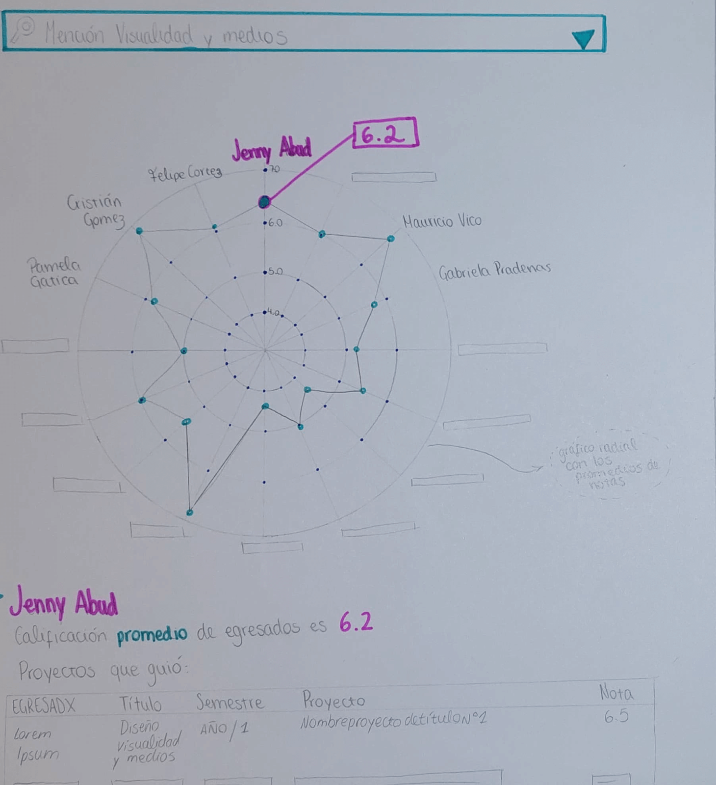
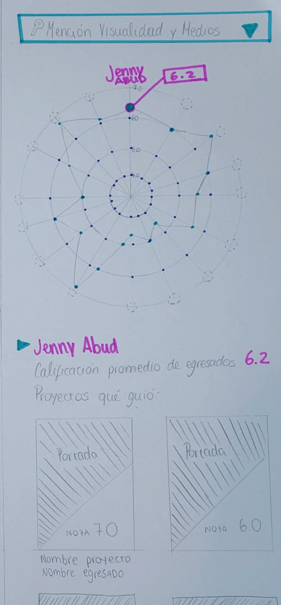
Segunda propuesta
Aquí uno selecciona su mención, para tener acceso a los profesores de título, sus áreas de especialización y el porcentaje de aprobación de los alumnos.
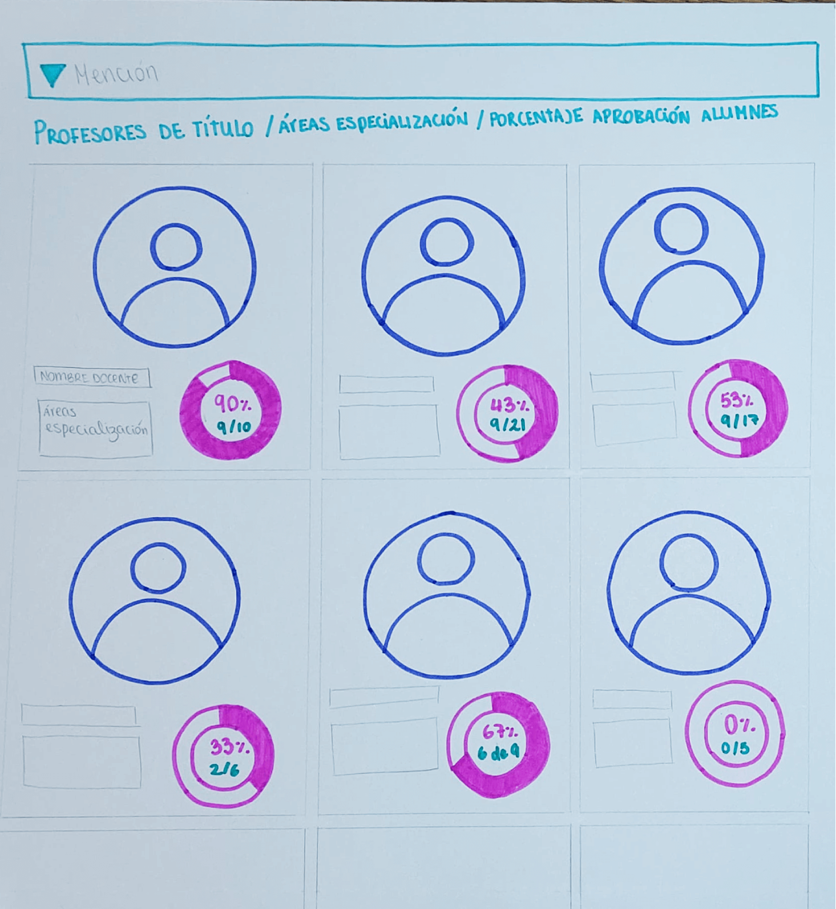
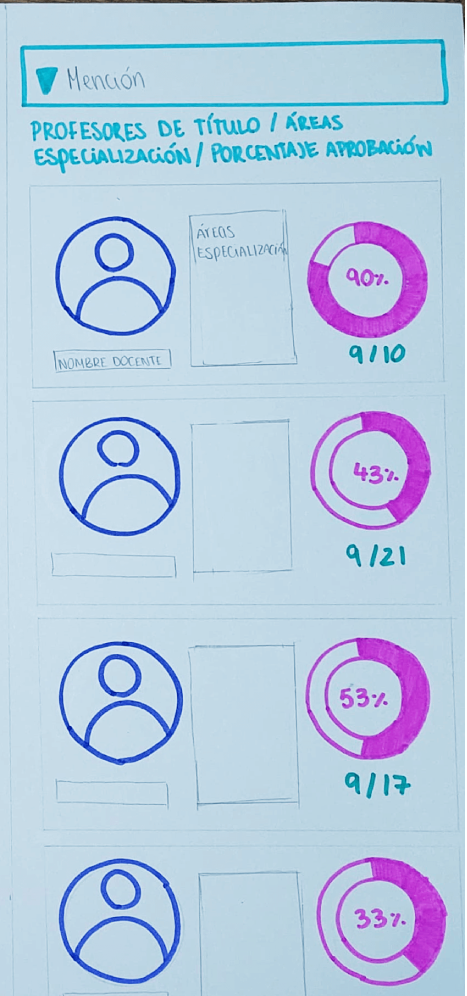
Tercera propuesta
Aquí lo principal es que encontramos las calificaciones que le han puesto los alumnos a los profesores, además de que pueden acceder a una sección aparte de comentarios específicos. Tiene la posibilidad de filtrar profesores de mayor popularidad a menor y también la mención.
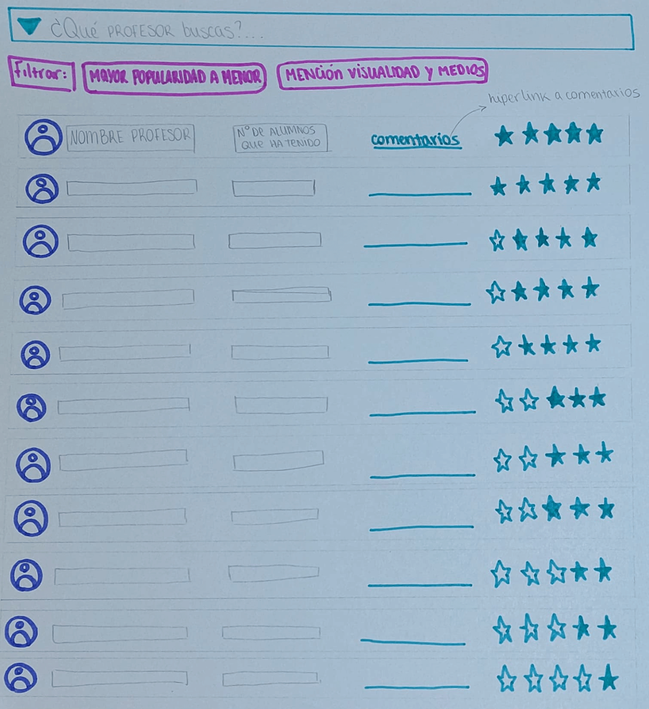
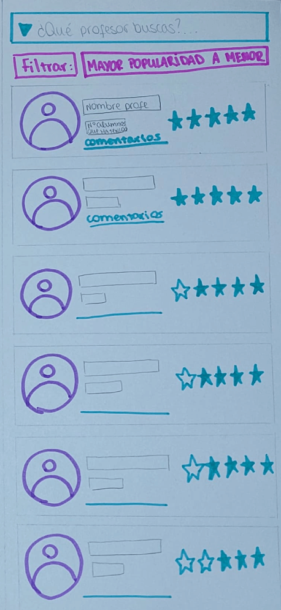
Cuarta propuesta
Aquí lo principal es que el alumno puede seleccionar tres profesores y realizarles una comparación en base a la nota promedio de los egresados, estrellas de percepción, alumnos aprobados y alumnos reprobados.
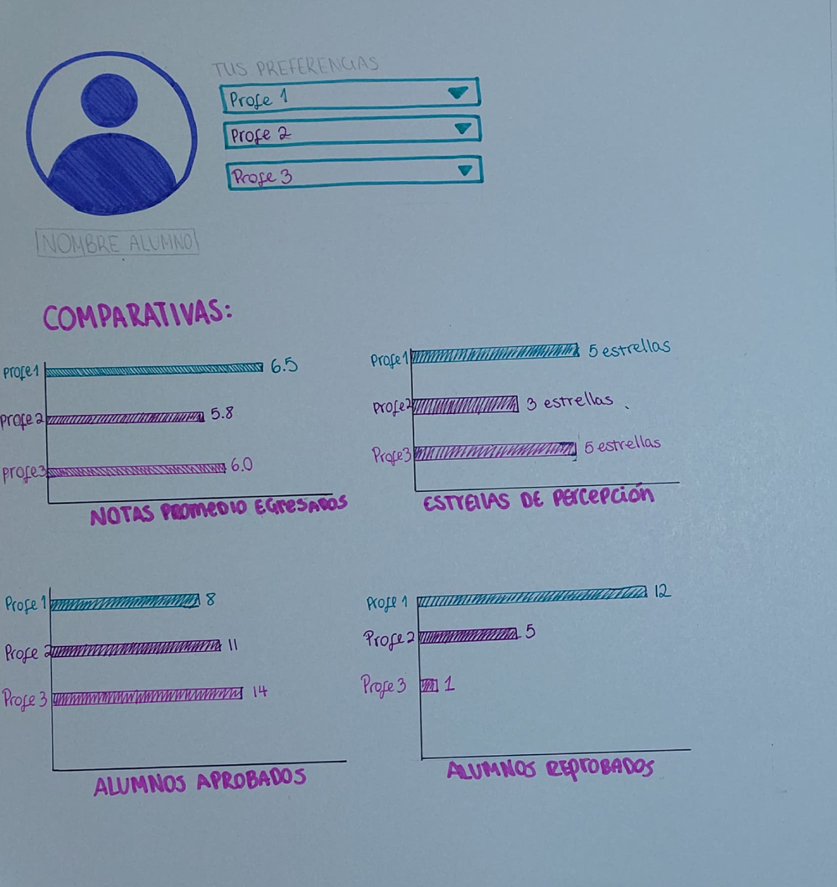
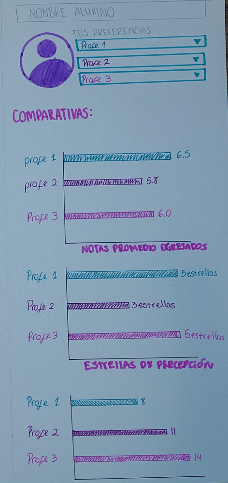
Quinta propuesta
Aquí los profesores de título se encuentran clasificados por líneas de investigación, por lo que uno puede cliquear en la sección, y filtrar la información, para que el proceso de busqueda sea rápido.
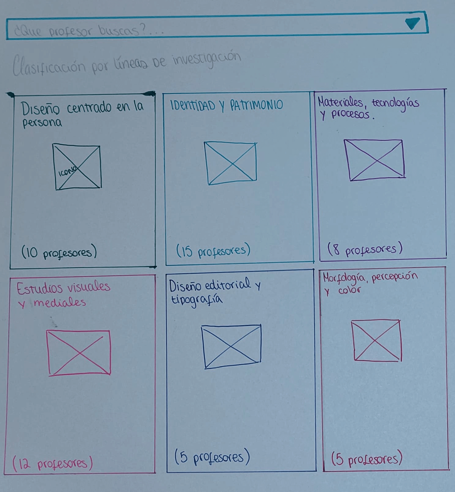
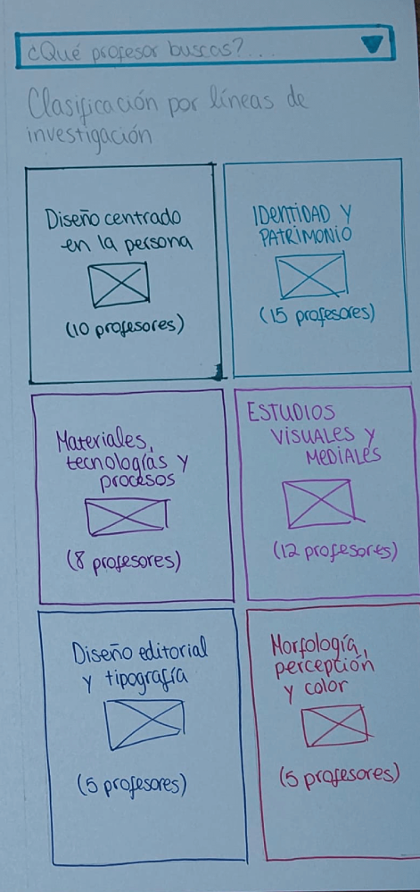
Sexta propuesta
Esta es una búsqueda directa de profesores, donde el alumno podrá encontrar una foto, una breve descripción del profesor y su línea de investigación. Esto se encuentra acompañado de un gráfico de bala que nos permite apreciar cuatro ámbitos del profesor; las notas promedio de egresados, los alumnos reprobados , los aprobados y cuántas estrellas de precepción tiene.
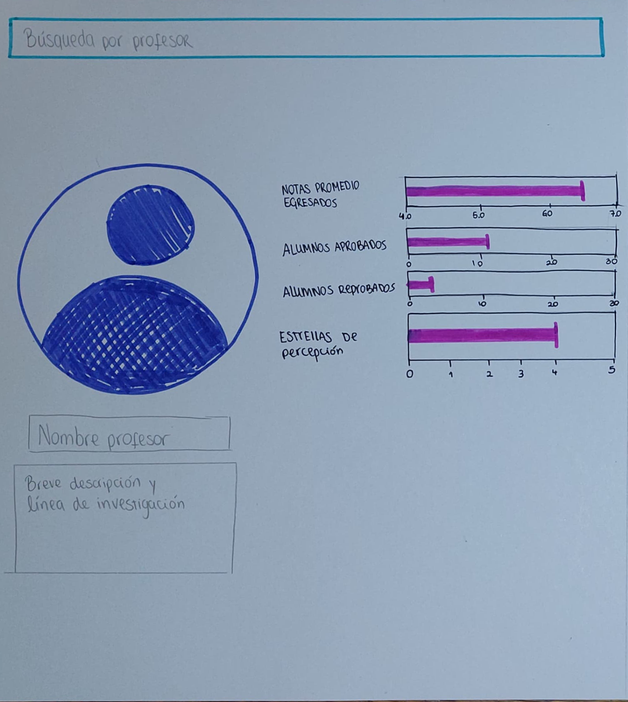
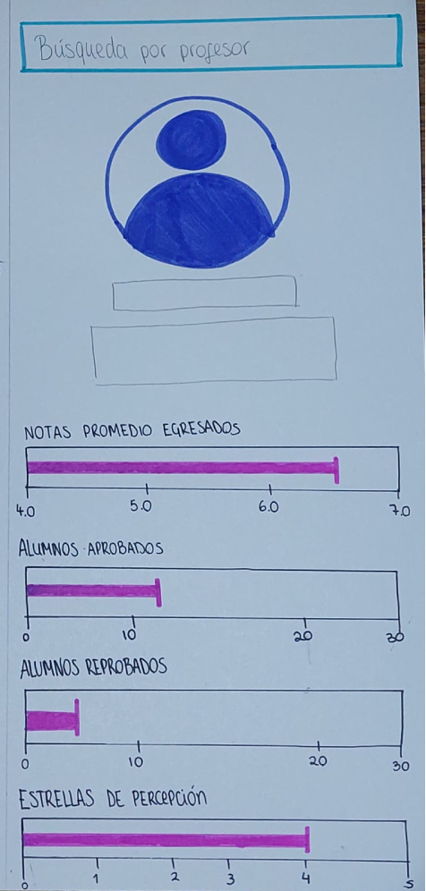